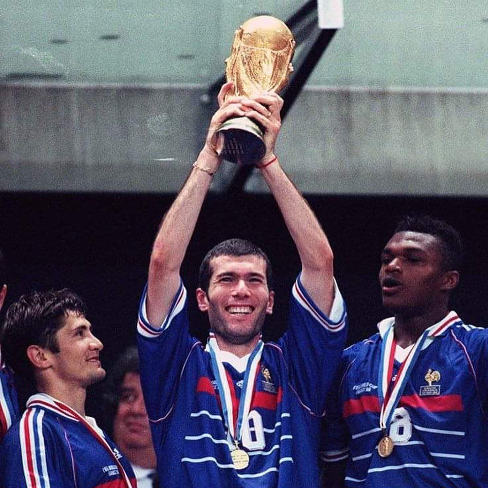

.jpeg)
In 2001, Zidane joined Real Madrid for a world record fee of 150 billion Italian lire, (about €77.5 million by fixed exchange rate; a reported 12.8 billion pesetas) in instalments, and signed a four-year contract.
The latest addition to the Galácticos era of global stars signed by Real Madrid every year, in his first season at the club Zidane scored a famous match-winning goal, a volley hit with his weaker left foot from the edge of the 18-yard box, in Madrid's 2–1 win over Bayer Leverkusen in the 2002 UEFA Champions League Final.
The goal has been cited as one of the greatest in Champions League history. The magnitude of the strike saw Zidane produce one of his most emotional goal celebrations as he ran towards the touchline with mouth wide open, screaming in delight.
Zinedine Zidane, 18 yards out, watching and waiting, adjusts his body and, in one, smooth movement, pirouettes and catches it full on the volley with his left foot. It flies past Hans-Jörg Butt.
It was the moment of Zidane's apotheosis, more so than the 1998 World Cup final, because of the moment's grace and beauty, because of his control of everything around him. He was Bruce Lee in slow motion while kung-fu chaos reigned around.
The next season, Zidane helped Real Madrid to win the 2002–03 La Liga, starring alongside Luís Figo in midfield, and was named the FIFA World Player of the Year for the third time. In 2004, fans voted him as the best European footballer of the previous 50 years in UEFA's fiftieth-anniversary Golden Jubilee Poll.
While Zidane's final season of club football ended without a trophy, he enjoyed success on a personal note by scoring his first hat-trick, against Sevilla, in a 4–2 win in January 2006. He ended the season for Real Madrid as their second highest goalscorer and assists provider behind teammates Ronaldo and David Beckham respectively, with nine goals and ten assists in 28 games.
On 7 May 2006, Zidane, who had announced his plans to retire after the 2006 World Cup,played his farewell match and scored in a 3–3 draw with Villarreal.
The squad wore commemorative shirts with ZIDANE 2001–2006 below the club logo. The 80,000 fans inside the Santiago Bernabéu held up a banner reading, "Thanks for the magic."
In 2012, Zidane featured for Madrid in an All Stars Match against Manchester United which resulted in a 3–2 win for Real. In April 2013, he was named by Marca as a member of the "Best foreign eleven in Real Madrid's history.
Both France and Algeria consider Zidane a citizen.
It was rumoured that coach Abdelhamid Kermali denied Zidane a position for the Algerian squad because he felt the young midfielder was not fast enough. However, Zidane dismissed the rumour in a 2005 interview, saying that he would have been ineligible to play for Algeria because he had already played for France.
Zidane was a member of the French under-21 squad that won a bronze medal at the 1993 Mediterranean Games in Languedoc-Roussillon.
He earned his first cap with France as a substitute in a friendly against the Czech Republic on 17 August 1994, which ended in a 2–2 draw after Zidane scored twice to help France erase a 2–0 deficit. After Eric Cantona was handed a year-long suspension in January 1995 for assaulting a fan, Zidane took over the playmaker position.
Euro 1996:
Despite not being at his best during the tournament, France reached the last four.
Zidane was not yet fully established in the French team and his level was quite average during the whole event, but he managed to score in the penalty shootout in both the quarter-final and semi-final. France was eliminated in the Euro 96 semi-finals in a penalty shootout against the Czech Republic.
1998 World Cup:

The 1998 FIFA World Cup was the first World Cup that Zidane participated in; the tournament was held in his home country, France. The French team won all three games in the group stage, with Zidane setting up Christophe Dugarry's goal in the opening match against South Africa from a corner, and contributing to Thierry Henry's opening goal in the second match against Saudi Arabia; however, Zidane was sent off in the latter match for a stamp on Fuad Anwar, becoming the first French player to receive a red card in a World Cup Finals match.
Without their playmaker, France proceeded to win 1–0 in the round of sixteen game against Paraguay and, on his return to the side, defeated Italy 4–3 on penalties after a goalless draw in the quarter-finals, with Zidane netting the first spot kick in the shoot-out.
France then defeated Croatia 2–1 in the semi-final. Although Zidane had played a role in the team's accomplishments, he had yet to score a goal at the World Cup.
Zidane and France went on to play against defending champions and favourites Brazil at the Stade de France in the 1998 FIFA World Cup Final. France dominated Brazil from the kick-off, with Zidane scoring two similar goals, both headers from corner kicks taken by Emmanuel Petit and Youri Djorkaeff.
Courtesy of Zidane's two goals, France went into the half-time break 2–0 up with one hand on the World Cup trophy.Petit added a third goal deep in stoppage time to seal the 3–0 win and France's first World Cup.
Named man of the match, Zidane became an instant national hero and would receive the Legion of Honour later that year.More than one million people lined the Champs-Élysées in Paris, with celebrations centred around the Arc de Triomphe.